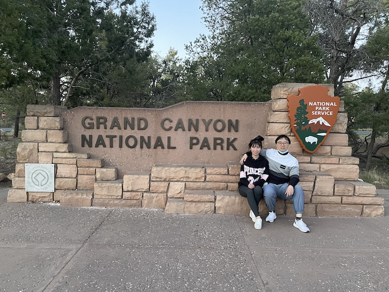
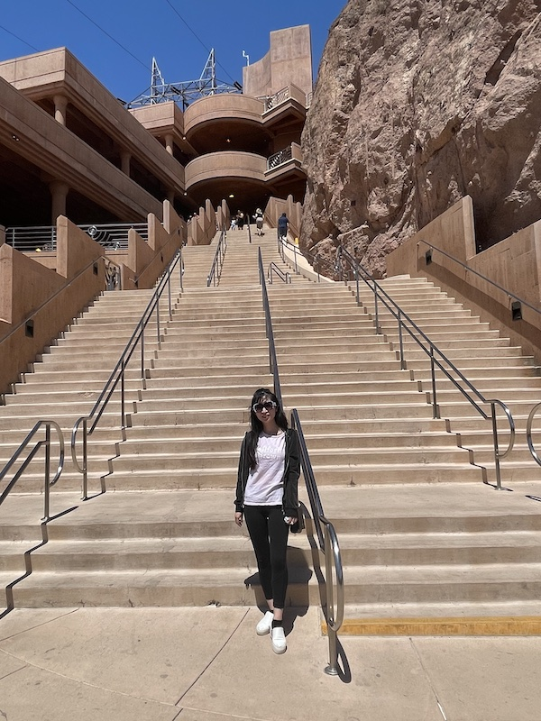
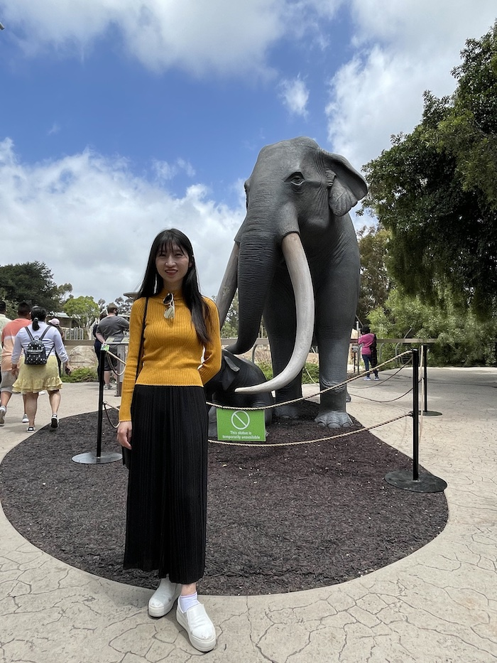

千里之行，
始于足下
--路漫漫其修远兮，吾将上下而求索--

--路漫漫其修远兮，吾将上下而求索--
在做了充足的准备后，我们从雨果顿出发了。娇娇负责陪毛毛聊天以防毛毛疲劳驾驶和喂饱毛毛，毛毛的任务就多样化了，除了专职开车以外，还有计划各种路线合游玩景点等等。饿了就张嘴等娇娇投食就行。
原本这天打算玩大沙丘公园，可沙漠居然下雪夹冰雹了，路上也是突然降温，毛毛和娇娇都没做好准备，等到了Alamoso的宾馆后，都有点感冒😷了。两个人都奄奄一息，还好吃了AirBone才缓了过来。
一大早，窗外居然下起了小雪。也许这是之后发生小插曲的预兆吧。。娇娇应该是很久没看到雪❄️了，兴奋地哇哇大叫，跑到外面去转圈跳舞💃。

于是毛毛临时改变计划，直接往大峡谷公园进发。根据导航，我们会翻越一座雪山🏔️。雪越下越大，我们也只能小心翼翼地以二三十迈速度龟行。

好不容易越过雪山之后，途径四州相交点纪念碑，可惜疫情已经封锁很久了，只能在大门外面看看。一对和蔼可亲的从佛罗里达开车过来玩的老夫妇主动提出帮我们拍照，好心人真的很多。

大约又开了四五个小时，在傍晚时分我们到达了此次旅游真正意义上的第一个景点--大峡谷公园。大概是坐太久了，娇娇下车后就像顽皮的猴子一样四处转悠，毛毛拉也拉不住。

接着来到观景平台，体验了一览众山小的感觉。毛毛上次来这里还是七年前，故地重游，别有一番风味在心头。只是同游的不再是基友，而是女友的陪伴。

有个小彩蛋是，娇娇看到离悬崖不远处有个长椅，就很想拍照。毛毛怕危险一直不让，最后经不住死缠烂打还是拍了。
逛了两小时后，眼看太阳快要下山，我们便匆忙赶去公园门牌那里。很幸运的是，那儿还碰巧有人在，于是就有合影啦，完美！
之后我们在临近的小镇Grand Junction随便找了间小旅馆住了下来，房间真的很小，让我们都惊呆了，不过这也许是为了和之后一天的威尼斯人作对比吧～
离开了Grand Junction，下一个目的地便是本次旅行第一个大城市，也是大名鼎鼎的罪恶之都，拉斯维加斯。从东面往西开的话，必然会经过一个挺有名的景点：胡佛大坝。风很大，把我们吹得像傻子一样。
在返回车库的时候，娇娇提议走楼梯减肥，这可真是要了毛毛的命，长时间开车已经很减肥了|o|。但是在娇娇的搀扶下，毛毛一步一个脚印地爬到了顶层，完成了自我的挑战。
之后就来到了罪恶之都城--拉斯维加斯，因为饥肠辘辘，我们就直奔事先查过的挺有名的早茶店--金元宝。不得不吐槽一开始这家店真难找，我们晕头转向自我摸索到了室外游泳池，最后还是遇到个好心的大爷帮我们指路才找到的。好在饭菜质量不错，我们大快朵颐了一番。
吃饱喝足后，我们去威尼斯人check in。从踏入大厅开始，就被酒店的奢侈华丽所折服。虽然第一次check in我们走了很多冤枉路，腿都有点软了。但当我们推开房门那一刻，一切都觉得是值得的了！高贵富丽堂皇的装饰，宽敞明亮的开间，无敌景色的落地窗，都一一直击我们的内心。娇娇看到带高级梳妆镜的豪气卫生间，当场发出了土拨鼠尖叫。
被这些花花绿绿的世界吸引住的我们，就像打了鸡血一样开始我们的拉斯维加斯酒店探索之旅。娇娇看到一台台漂亮的老虎机，也控制不住跃跃欲试，吓得毛毛一把拉住。千里之堤，溃于蚁穴，不得不防啊。
威尼斯人的商业区可谓是金光璀璨，珠光宝气。在一个瀑布下的LOVE留下爱的足迹后，我们又来到了二楼的仿威尼斯小镇街区。看来是花了大价钱打造出的景区，一草一木，一花一树，包括小河和灯饰，都很还原了威尼斯水乡的风貌，再加上蓝色天空白云的天花板吊顶，真是有种身临其境的感觉。
不知不觉夜幕已经降临，来到拉斯维加斯，晚上怎能不去霓虹灯牌子打卡呢？所以娇娇在霓虹灯牌子前留下了倩影。之后就走马观花般地把周围一些有特色的狮身人面像、石中剑等酒店逛了逛，当作到此一游吧～
今天的日子很特殊噢，谐音“我爱你”的日子，所以早上趁还在拉斯维加斯，毛毛就带娇娇去了一家特色玫瑰店，买到了可以保存一年的玫瑰花。这花瓣堆起来的笑脸，预示着我们今后的生活都是开心快乐的～
然后我们就再南下前往我们这次旅行的第二个大城--圣地亚哥，第一天我们的宾馆是Mission Bay，一个四周环水绿意盎然的小度假村。底楼的外挑式阳台可以直接通向海滩，非常人性的设计。
到了晚上，因为娇娇正好是特殊时期，所以想吃热的东西，毛毛就点了pho。味道非常不错，哈哈，娇娇吃了后也开心得一蹦三尺高。
Mission Bay里的景色很好，一大早我们就像趁着check out之前多拍些照片。在门口，有个很大的秋千椅，我们就坐在上面等有人经过给我们拍照。
在这个圆拱门娇娇留下了最美的背影照。
很有特点的水滴椅子和贝壳床
在Mission Bay拍完照后，我们就驱车前往全球第一的动物园--圣地亚哥动物园。离宾馆很近，15分钟就到了。停车场数量也让我们吓了一跳。娇娇有点觉得冷，就穿了毛毛的背心，也成为了今日亮点～
进了园区，跟随着大部队，我们找到了第一个动物：考拉。它们还真是很可爱，懒洋洋地趴在树上一动不动，只知道嚼树叶。
考拉旁边，我们看到了一个挺大的小岛，结果定睛一看，好家伙原来是狒狒们。娇娇看到狒狒，兴奋地大叫了起来。只是狒狒实在是太丑了，屁股血红血红的，发型还是莫西干发型。毛毛被狒狒丑到哭了。
娇娇依依不舍告别了狒狒后，毛毛如释重负，终于和丑东西说再见了。然后我们就看到了不停踱着步的山猫。
在动物展览区之间，路边还放着不少好玩的雕像。毛毛发现了这只雄赳赳气昂昂的鹰，觉得很符合娇娇的气质。
不远处有个小象的雕像也是栩栩如生。
不经意间，我们就差不多走了大半个园区。这时我们发现有个4D小电影院。4D电影是娇娇的最爱，我们毫不犹豫地买了票。就15分钟左右，讲的是动物们与人类入侵者斗智斗勇的故事。点个赞！
4D电影院旁边就来到了北极熊馆。我们等了一会儿一直没看到熊。结果就在我们打算离开的时候，毛毛尖叫了一声：快看有人在跑。于是机智的我们意识到应该是熊出没了。回去后果然看到了硕大的北极熊慢悠悠出来觅食了。真的好大，很puffy，想摸摸！
心满意足看了北极熊的表演后，来到了河马的领地。娇娇撒娇得说毛毛就是河马，嘴巴一直老大的，一口一个馒头。毛毛无法反驳。。
接下来便是百兽之王的地盘了。这只老虎大概是饿了，看到我们就虎视眈眈，直流口水。还是快走吧。
终于进入了灵长类动物的区域，原本已经很累的娇娇像打了鸡血一样，两眼放光似的，盯着白臂猿看。可惜人家好像很高冷的说。不过娇娇是不离不弃的，哈哈。
金刚大猩猩！丛林里的小霸王！一开始它们都在睡觉，娇娇便不断地拿出香蕉，发出嗷嗷嗷的叫声想吸引它们的注意力。也许是精诚所至，金石为开。大猩猩彷佛听到了娇娇的呼唤，起来开始散步了。娇娇开心得不得了了哟。
旧的不去，新的不来。刚看完了大猩猩，我们又看到了红毛猩猩。其实披头散发得真的很像老巫婆，但娇娇还是一视同仁，想把她的爱传达给它。毛毛真快看傻掉了。
在灵长类园区呆了很久，当我们回过神来的时候，已经快到了动物园关门的时间。于是我们想最后看一眼长颈鹿。娇娇说长颈鹿是动物里的白雪公主，眼睫毛真的很好看。就是喝水时姿势有点傻。
在离开动物园时，眼尖的娇娇看到了大猩猩的雕像，毛毛心领神地摇了摇头，按下了快门。
出了动物园，我们就去吃韩国自助烤肉。白天消耗比较大，可惜毛毛状态不好，没有吃很多，呜呜呜。
一早，拉开窗帘，大海直接映入了眼帘。对，这是我们的海景房。面向大海，春暖花开。此景只应天上有，人间能有几回闻。
check out了海景房，感觉又回到了凡尘。因为是圣地亚哥的downtown，毛毛计划好一早就能去胜利之吻。那是一个很有故事的地方，二战结束日德投降，在纽约时代广场上一名水军士兵忘乎所以地抱住身旁的一位护士热吻。毛毛打趣地问娇娇，毛毛这么做会咋样，娇娇立马害羞地跑开了。最后找了一对老夫妇帮我们拍了这张，老阿姨一直打喷嚏让毛毛很担心会不会传染的说。。
告别了胜利之吻，毛毛驾车去加油站。刚加完油回到座位，娇娇一脸坏笑说想吃豆浆油条。原来事先都查好了哈，真是个机灵鬼。想着今天也不着急去safari，我们就去买豆浆油条了。结果还发现又煎饼果子和狗不理包子。赚了赚了。
大约十点多，我们到了Safari。这个是和圣地亚哥动物园属于一个系列的。娇娇今天穿的衣服被吐槽成了袈裟。阿弥陀佛，善哉善哉。。刚说完毛毛头发被揪住了。
我们的主角鸭子登场了，它们虽然看上去憨头憨脑，但胆子真的是很大，娇娇靠得很近也丝毫没有胆怯。不过，毛毛一靠近的话，鸭子们就起身走掉了|o|。
看了下地图，发现很多地方都因为COVID暂时关闭了，于是我们决定还是先去看娇娇最喜欢的猩猩们。到了猩猩山后，娇娇地兴奋地挤到最前面看猩猩去了，毛毛累得趴倒在长椅上。路过的游人不时投来担忧的目光，估计怀疑毛毛是不是生病了。毛毛小睡一会儿后，看到一个爸爸偏心地抱起好看的小女儿让她看猩猩，稍微逊色点的二女儿就含着手坐在摇篮车里，直到妈妈来抱起她。最后我们都看到了猩猩表演拉粑粑。
抬头一看，一个大热气球映入我们眼帘。娇娇嚷着要去看，我们便三步并作两步跑了过去。然鹅娇娇有恐高症，我们只能在下面拍拍照打个卡。热气球我们来过了！
误入竹林深处，争渡争渡，惊起一滩鸥鹭。毛毛趁这片幽静竹林四下无人的时候，抓怕了这张。
最后，我们来到了袋鼠小天地。令我们感到惊讶的是，这里的袋鼠居然没有栏杆，人其实是可以近距离相处的。在这之前，娇娇没怎么见过袋鼠。在看到这销魂的躺姿后，娇娇表示成了袋鼠的粉丝。
下午四点多的时候，我们就离开了safari动物园。因为和娇娇的小姨约好见个面，我们就事先等在了附近的绿地公园。娇娇的表妹明子也来了，大家一起绕着公园逛了一圈，聊了会儿天。最后还拿了小姨一点零食，感觉怪不好意思的。
分开时，小姨嘱咐我们路上当心。我们就夜路开到了洛杉矶。在选择餐馆的时候，我们不小心选到了一家美式中餐馆。不过味道还可以吧。
在洛杉矶的第一天宾馆也是别有风味，绿化很好，窗口就绿树成荫，鸟语花香。算是我们疲劳的一天的馈赠吧。
今天睡了个懒觉，毛毛和娇娇说今天不用很早起的，时间很充裕。结果我们就直接去滋味成都吃午饭了。他们家的回锅肉成了毛毛学习的启蒙。吃完饭后，我们去旁边加油站买蛋筒。毛毛问娇娇吃不吃，娇娇说不吃。毛毛就拿着一个蛋筒去结账，结果收银员阿姨困惑地看着毛毛说：that's it?
然后我们就去今天的重头戏，星光大道。毛毛和娇娇解释说地上的星星就代表着一个明星。娇娇问毛毛能不能把娇娇的名字刻上去。毛毛说可以的啊，娇娇肯定会成为一颗星星。
来到了能看到远处好莱坞标记的高楼，等着游人帮我们拍照。可惜毛毛的面瘫脸又发作了，拍出了本次旅行数一数二丑的照片。
再往前，就来到了中国戏院。在这条路上正好有游行人员在举牌抗议。
忽然娇娇发现了Line Friends的店铺，里面的动物模型都特别可爱。
Line Friends里的人气招牌的角色就是这个熊啦。娇娇说毛毛摸起来的手感和这个熊一样。
星光大道参观完了后，我们就抓紧时间去打卡网红墙。洛杉矶的网红墙很有名，最有标志的就是这堵粉红墙了。我们到的时候，恰好遇到这对黑人带了道具在摆拍。

我们后来在网上搜了这堵粉红网红墙的最佳拍摄角度，果然试了几张后，觉得还是在角落拍最好，比起背景是平面，角落更显得立体。
在粉红墙不远处，还有这个有名的天使之翼。娇娇在这里变成了天使，美得毛毛都看得呆掉了。
网红墙打卡完了后，毛毛带娇娇去买Lady M。心满意足买到了抹茶和百香果口味的千层蛋糕后，娇娇在樱花树下开心地笑了～
走了一天路的我们，腰酸背痛的我们来到了这次旅游第二经典的宾馆———Luxe。位于比利佛山庄的富人区，环境炒鸡好。服务员也很nice，主动送我们很多水。
住这么好的宾馆，怎么能不配美酒佳肴呢？毛毛于是喊了豪华外卖，北京烤鸭和小笼包。加上刚买的Lady M，今晚注定是一个欢愉之夜～
想当初为了准备来环球影城玩，娇娇还特地去打了强生疫苗。不过原则上要打完针后过两周才行，所以我们希望园方不会检查很严格。还好的确我们运气很好，我们顺利进了园区，开始我们精彩的一天。
进园区前，阳光洒在红毯上，将娇娇的倩影烘托得淋漓尽致。毛毛有点看得痴痴的，彷佛在陪娇娇走戛纳红地毯。
哇，小黄人！看到了小黄人，毛毛第一个冲了上去。傻里傻气呆萌的小黄人是毛毛的最爱。毛毛就拉着娇娇在小黄人前面摆拍了下。
我们到的还是比较早，娇娇马上就拉着毛毛说要趁机先去玩哈利波特。娇娇上次来的时候还没有哈利波特，所以这次还是很期待的。刚进哈利波特区，火车服务员就招呼我们可以拍照。
这个哈利波特区很大，除了主城堡，外围还有各种魔法商店和电影里相关场景。步步是景，随手一拍就是漂亮的照片。当然，还是因为娇娇好看才是主要原因。
因为很早，我们几乎没有排队，就一路畅通无阻，马上快进主城堡了，给娇娇留个影纪念下。

马上就要上战场了噢，娇娇此时还不知道几分钟后会叫到嗓子疼|o|。
经历过了炒鸡刺激的哈利波特过山车，娇娇的小心心久久不能平静。于是毛毛带着娇娇去看了个功夫熊猫电影，之后就来到了小黄人的点。和小黄人电影里格鲁住的房子布景一模一样。过山车很好玩，没有特别惊险。
坐完了小黄人，我们就排队对面的宠物大揭秘。宠物大揭秘的故事背景是在纽约，所以这栋楼看上去就是典型的纽约曼哈顿公寓楼的样子。
在公寓楼里看到主角Max，那条白狗狗。最后我们坐到机器的时候，才发现它其实就是个观光游乐椅，没有任何的惊险刺激的飞速旋转位移等，适合小朋友坐的，哈哈。
之后我们到了旁边的水上乐园，恰逢酷暑，众多小孩都兴奋地往喷水池里冲。在水池开放前，帮娇娇小黄人鸭子这儿留个影。
在水池乐园里，我们被喷水困住，就索性在一旁拿水泡枪玩了起来。
经过小店铺，毛毛帮娇娇买了棉花糖。事后娇娇妈妈说看上去像企鹅。开心地吃完棉花糖后，我们体验了辛普森的一家过山车。刺激程度应该排在这次所有里面的第二名。每个小独立房间里的车会升降，
玩完了辛普森，我们上半区就结束了。接着我们来到了下半区，说到下半区那肯定就是变形金刚了。唤起了娇娇七年前的回忆，当年娇娇和小姨一家来玩的时候，变形金刚坐了两次。毛毛上次坐变形金刚也是2014年在佛州的时候了，有点感慨啊。
变形金刚之后，已经五点了，我们只能坐侏罗纪公园了。结果我们足足排了两小时才排到。其实坐过之后觉得还是比较过时了，相比现代化的4D过山车，侏罗纪公园还大部分都是恐龙模型。就当作回忆童年吧。
侏罗纪公园体验完之后，已经到了关园的时间，趁着人少，我们看到了很多值得拍照的地方。这张宝马摩托车照是我们的得意之作。毛毛为娇娇保驾护航，很酷酷的。
宝马双人摩托车一旁是送花小摩托，很符合娇娇的气质呢，咳咳，嗽毛毛就算了，不出镜了。

这张照片我第一反应就是闻香识女人，采花献娇娇。那些花虽然好看，但是娇娇人比花艳。闭月羞花里的羞花指的就是这个吧。花都羞愧地低下了头，不敢与娇娇比美了。
毛毛的任务就是走谐星搞笑路线的，毛毛有自知之明，所以见到了绿色一坨的树，就十分自然地配合出了这样的表情。不过真奇怪，毛毛拍正常照片都是面瘫脸的。。。为什么呢。

路经一辆很破的旧车的时候，娇娇提出和毛毛PK同样的姿势拍谁效果好。结果是显而易见的，毛毛完败。
出园区前，毛毛在gift shop给娇娇买了小黄人的公仔。娇娇说看到小黄人，就像看到了傻里傻气的毛毛。
夕阳西下，也到了和环球影城说再见的时候了。这一天玩得非常充实，娇娇的重温游乐园愿望也实现了。我们还会回来的，环球影城！
今天就要和带了三天的洛杉矶告别了。我们一早开了两个小时先来到了丹麦小镇。作为著名的一号公路上的十分有名的景点，毛毛上次来一号公路时没有经过，甚是遗憾。这次就早早的把它归入计划，来看看长啥样。
值得一提的是，从洛杉矶出来时我们在trade joe买了点物资。毛毛就一眼相中了一束向日葵🌻。作为拍摄的道具，向日葵可是很夺人眼球的。这不，娇娇彷佛有了厉害的武器一般，到处横冲直撞。这个前后人物借位的镜头不错，看来娇娇也有当摄影师的潜质哇。
丹麦小镇里有好多欧洲气息的建筑小品。除了欧式商店外，我们看到个路边电话亭。当然一看知道不能真的打电话，但很有特色，就让娇娇辛苦当下模特拍了，嘻嘻。
整个丹麦小镇最有特色的，就是这个大风车了。四周聚集着好多拍风车的游客，看到娇娇手捧鲜花，有个大叔就很热情地主动帮我们拍，开玩笑说拍的好要给他一刀小费的噢。可能是被大叔的幽默感染了，毛毛面瘫的脸难得露出了自然的笑容，于是这张珍贵的本次旅行能排前三的毛毛娇娇合照诞生了。
丹麦小镇稍微逗留了会儿后，我们便开始了一号公路。又回到熟悉的地方，只不过这次是自己驾驶着方向盘，带着自己的爱人，毛毛也是很激动的。娇娇也被这美丽的海边公路景色所折服了，一直在哇哇得叫。
一号公路上每开一会儿，就会有观景点可以驻足看景色。来到了个海湾的地方，阳光洒在砾石上，调好角度，帮娇娇拍了张花好日圆，海天一色。
毛毛也不甘示弱的，娇娇抓拍的很好，给毛毛也留下张拿得出手的帅照。
在开到一半的时候，我们看到个往海里伸很多的平台，吸引了我们下车前往。在入口不远，碰到一对青年夫妇，也主动帮我们拍照，那丈夫还问我们是不是拍订婚照片。娇娇一听到脸就刷一下红了，害羞地想找个地上的缝钻进去一样。
这种狭长的小路，也适合拍背影照，感觉有点像杂志封面呢。
在返回停车场的路上，有只小松鼠也被楚楚动人的娇娇吸引住了。一直跟着不肯走。娇娇就友善地和它问好，可惜我们身上没带吃的，不然说不定可以骗它回车里呢。
在刚过了Big Sur不久，在大约傍晚时分，我们就到了著名的一号公路上的大拱桥，经常在电视电影里露脸。我们也是运气好，前不久它才刚修完。

终于到了传说中美丽的卡梅尔小镇，还好我们赶在了天黑之前，这样可以看到夕阳下的美景。当我们走到沙滩时，就被惊艳到了，真的好美。
接下来毛毛体验到了带模特四处奔波拍照取景的操劳，卡梅尔小镇里各式各样，风格别致的商店随处可见，可谓是一步一景。所有商店都琳琅满目，可见店主也都是花了很大的心血布置的。据传闻外部人进来都不能穿高跟鞋，是为了怕声音毁了氛围。
这个小店是查攻略时就必然会看到的那家，可能因为位置好，就在主要街道上，而且小屋子有点像魔法小屋，有一丢丢神秘的感觉。当然，不管是哪个小屋，都是用来给娇娇当陪衬的。
这里有个彩蛋是，毛毛和娇娇拍完几个店后，想开车走了，但刚开不久，又看到很多很好看的店。于是毛毛又下车拉着娇娇继续拍，这才是真的流连忘返吧。这样拍拍走走有大概三次，最后实在是天很黑，拍不了照了，我们才悻悻地离去。难忘的卡梅尔小镇！
这天晚上我们在蒙特雷过夜，在这儿娇娇查到了家韩国饭店。虽然写着八点半关门，我们过去可能就已经关了，我们还是抱着侥幸心理想试试运气。结果和蔼可亲的韩国大妈接待了我们，为我们准备了娇娇最喜欢的石锅拌饭。这也是毛毛时隔很久吃到的呢，为日后毛毛自制石锅拌饭埋下了种子。
原本计划中我们是没考虑来旧金山的，但后来毛毛想既然都开完一号公路了，离旧金山很近了，还是去下吧。娇娇买了马卡龙，毛毛从来没吃过，所以很开心，哈哈。
之后毛毛去见了三个以前的同事，唠了会磕。到了城市里，看到高楼大厦，感觉就暂时回到了熟悉的生活。
经过渔人码头的时候，娇娇回忆起了两年前来旧金山办签证时，和一个朋友来这里玩过。毛毛和娇娇记忆被唤醒，都很感慨。但现在与当时不同的是，现在是和彼此一起来创造属于我们的回忆了呢。
终于来到了旧金山的地标景点———金门大桥。娇娇上次来旧金山时时间比较紧张就没有来。我们先来到了远处的观望点，之前朋友有叮嘱过现在旧金山现在砸车很严重。我们刚到停车场的时候就看到了地上的碎玻璃渣。不过好在白天这里应该还算安全，就给娇娇拍了张金门大桥的远景照。
接着我们再来到了近景点，碰到了一对骑自行车的日本情侣，毛毛就直接用日语搭话能不能帮忙照合照，也顺便帮他们拍了照。
在近景点街对面，有一条小路，娇娇一看就觉得很好看适合拍照。毛毛一开始觉得一般，但拍了后看到效果觉得特别好，有种仙仙的感觉。

最后来到了金门大桥桥墩下的点，从这儿可以更近距离感受金门大桥的雄伟。接着我们就从金门大桥上来回开了两次，感受了下鲤鱼跳龙门，哈哈，以后会很旺的说。
意犹未尽地吹着海风后，我们驾车来到了市区。旧金山市区坡度很陡，停车也需要侧方拿轮胎斜着才能停。路上偶尔也能看到铛铛车。
市区里我们想逛的景点是九曲花街，娇娇一直想看得。这里有个小插曲是当我们找到停车位后，不远处有好心的路人提醒我们要锁好车窗，不要放贵重物品在车上，因为砸窗贼太多了，地上也的确到处看到碎玻璃渣。娇娇也担心，就和毛毛急匆匆地跑去九曲花街。九曲花街里的花开得很鲜艳，也值得我们这么辛苦地来回跑了哈。
毛毛可能是被太阳晒得有点呆滞了，这张合照拍出了双眼生无可恋的感觉。嗯，这样正好可以反衬出娇娇的美丽。
快到傍晚的时候，我们开回南湾去见了娇娇的朋友。因为时间不宽裕，挺遗憾地没法一起共进晚餐。于是为了让娇娇开心点，毛毛又带了娇娇去吃Lady M啦。这张照片拍出了很女神的感觉有木有啊？
离开南湾的时候，已经是晚上六点了，根据毛毛的计划，今晚至少要回到贝克斯菲尔德，这样的话明天开回拉斯维加斯就能轻松一点。还好红牛还是很给力的，这也是这次旅行中第一次开夜车。
大约晚上十点多，我们终于抵达了贝克斯菲尔德的double tree希尔顿酒店，非常宽敞，环境也很好。只不过我们也没多少时间参观，只能早点洗洗睡啦。